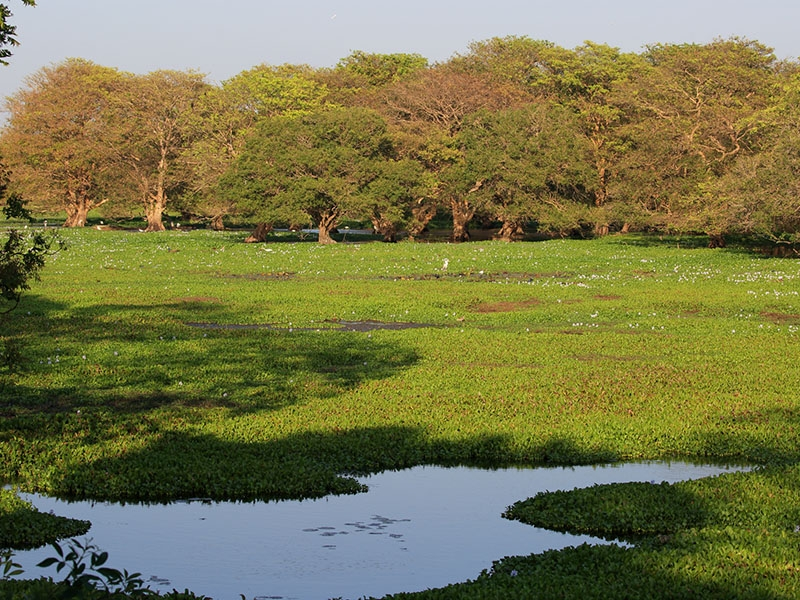
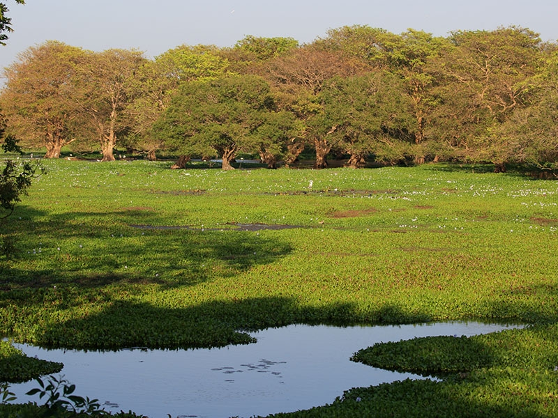

Horton Plains National Park is a national park in the central highlands of Sri Lanka
that was designated in 1988. It is located at an elevation of 2,100–2,300 m (6,900–7,500 ft)
and encompasses montane grassland and cloud forest. It is rich in biodiversity and many species
found here are endemic to the region.
It is also a popular tourist destination and is situated 8
kilometres (5.0 mi) from Ohiya, 6 kilometres (3.7 mi) from the world-famous Ohiya Gap/Dondra Watch
and 32 kilometres (20 mi) from Nuwara Eliya. The Horton Plains are the headwaters of three major
Sri Lankan rivers, the Mahaweli, Kelani, and Walawe. In Sinhala the plains are known as Maha Eliya Plains.
Stone tools dating back to Balangoda culture have been found here.
The plains vegetation is grasslands
interspersed with montane forest and includes many endemic woody plants. Large herds of Sri Lankan sambar
deer feature as typical mammals and the park is also an Important Bird Area with many species not only endemic
to Sri Lanka but restricted to the Horton Plains..

Srilankan Wild Life
Hortain Plains


Anavilundawa Wetland
Anavilundawa Wetland Sanctuary is located between Sri Lanka’s major towns of Chilaw and Puttalam.
The sanctuary covers an area of 1,397 hectares and is one of Sri Lanka’s six designated Wetlands
of International Importance.
The sanctuary is considered unique for its collision of three distinct
eco-systems: the forest wetlands, the coast’s saltwater ecosystem, and the freshwater lakes.
This exceptional melding of environments has resulted in the creation of a unique ecological nesting
and breeding grounds for hundreds of bird species.
The sanctuary benefits from an ancient system of giant
manmade tanks built in the 12th century, each connected to the other and working in tandem to form a complex
irrigation system that sustains its paddy fields and local vegetation, while simultaneously creating a natural
habitat for the birds that build their homes in the area.
The Wetlands are home to more than 150 species of birds;
20 species of mammals; 70 species of butterflies; and more than 50% of Sri Lanka’s freshwater fish species.
 


Sinharaja Forest Reserve
Sinharaja Forest Reserve is a UNESCO World Heritage Site and the last remaining
primary tropical rainforest in Sri Lanka .
It is home to a rich variety of endemic
and endangered species, such as elephants, leopards, monkeys, birds, butterflies, and reptiles .
The forest is also a cultural hotspot, where you can learn about the history and traditions of the local
communities that live in harmony with the forest .
You can explore the lush greenery, waterfalls, and streams of Sinharaja on foot or by jeep, and marvel
at the diverse wildlife . The forest is a treasure trove of endemic species, including trees, insects, amphibians,
reptiles, birds, and mammals .
The flora is a relic of Gondwanaland and thus provides input for the scientific study
of continental drift and biological evolution
According to the International Union for Conservation of Nature (IUCN), Sinharaja is the country’s
last viable area of primary tropical rainforest. More than 60% of the trees are endemic and many of
them are considered rare. 50% of Sri Lankan’s endemics species of animals (especially butterfly, amphibians, birds, snakes,
and fish species) are found here
Of Sri Lanka’s 26 endemic birds, the 20 rainforest species all occur here,
including the elusive red-faced malkoha, green-billed coucal, and Sri Lanka blue magpie.


Udawalawe National Park
Udawalawe National Park is a national park located on the boundary of Sabaragamuwa
and Uva Provinces in Sri Lanka.
The park was created to provide a sanctuary for
wild animals displaced by the construction of the Udawalawe Reservoir on the Walawe River,
as well as to protect the catchment of the reservoir1. The reserve covers 30,821 hectares
(119.00 sq mi) of land area and was established on June 30, 19721.
The park is home to a considerable
flora and fauna and is an important habitat for Sri Lankan elephants and aquatic birds2. The park is also
famous for its large population of elephants and is also home to many other animals
such as leopards, water buffalo, and crocodiles13.
The park is located 165 kilometers (103 mi) away from Colombo1. The park has an annual rainfall
of 1,500 millimeters (59 in), most of which falls during the months of October to January and March to May.
The average annual temperature is about 27–28 °C (81–82 °F), while relative humidity varies from 70% to 83%.


| Animal Most Seen | Location Type | Best Time to Visit | Description |
|---|---|---|---|
| Asian Elephant | Wilpattu National Park Udawalawe National Park Yala national Park |
December to March | The Sri Lankan elephant is the largest of the three subspecies of the Asian subspecies. Therefore, a Sri Lankan elephant would be much larger than those you see in India or Sumatra! On average, they're about 11 feet tall and can weigh up to 5400kgs. |
| Leopard | Sinharaja Forest Reserve |
January to March and August to September | The forest reserve is home to the highest density of leopards in Sri Lanka. |
| Sambar Deer | Horton Plains National Park | January to February |
The park is home to the largest population of sambar deer in Sri Lanka |
| Waterfowl | Anavilundawa Wetland Sanctuary | November to March |
The sanctuary is home to a large population of waterfowl, such as ducks, geese, and swans, which migrate from colder region |
| Crocodile | Udawalawe National Park | Year-round |
The park is home to many crocodiles, which can be seen basking on the banks of the Walawe River and the reservoir. |